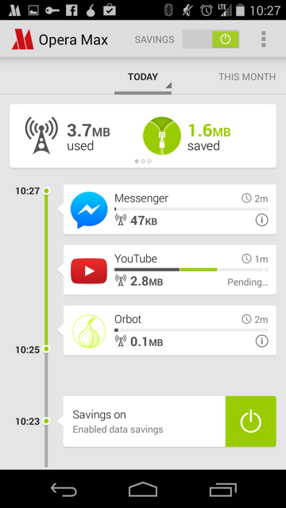
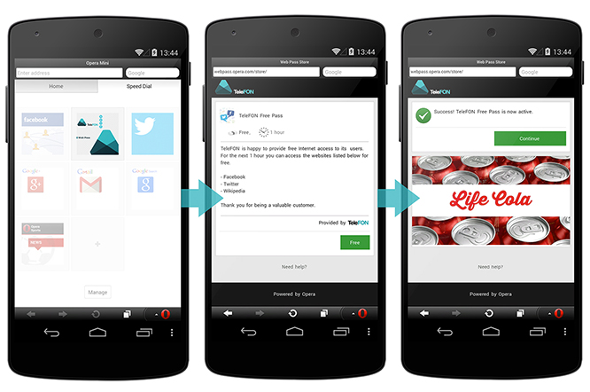

Smart Data Consumption
Overview
A Firefox OS project to bring smart data consumption to users in emerging markets so that they can do more with less data.
This project aims to help keep users informed and in control of the data consumed by their device and the applications on it.
User Stories
From Frog Mozilla Concepts
"In emerging markets, about 90% of mobile subscribers are using prepaid plans for which they need to manage their credits and spending. Brazilian carriers have various promotions and deals, and users monitor these to make choices on what SIMs to use."
Source: “Emerging Markets Opportunities” Mozilla Market Insights July 2011
"As Mozilla’s research showed, emerging market users are juggling multiple phones, SIMs, and plans to maximize coverage and to pay lower in-network rates as they communicate with their friends and family. Managing this complexity is a real user pain point, with users cobbling together their own solutions to cope."
"Today emerging market users employ many workarounds to overcome limited internet access and to minimize paying for content, from sideloading content purchased at local markets to sharing content through Bluetooth or cords."
Source: Mozilla User Experience Research 2012
Questions
- For each launch market, what is the distribution of people who have this problem having to "juggle phones", "juggle SIMs", and normal phone usage?
- Is limited internet access still an issue in 2014?
- Is there a trend we can look at to see how quickly it is becoming a non-issue?
- Are there any other "workarounds" people use to minimize for paying for content?
- What would be an acceptable price to pay for content?
Existing User Scenarios
Sofia
Gathered from FX OS Offline Concepts, January 2014
Persona
Sofia is a second year art student, trying to save money by living at home. Money is tight, but she’s doing the most with what she has. She pays for her own plan, but her brother gave her the phone. She likes this phone, it helps her avoid all of the extra fees and it makes her feel good about how much she has learned.
- I need to easily understand the current state
- I need an option to "set it and forget it" regarding my usage
- I work the system to save money
User Scenario
See sofia.user.story.pdf.
Existing User Stories (Jan 2013)
Gathered from offline_concepts_jan2013.pdf
Note: these do not solely focus on data consumption but also includes SMS and Voice usage.
As a cost conscious phone user, I want to know the amount of SMS/MMS messages I’ve sent/received in a billing period, so that I can avoid extra charges.
- Assumption: The networks our users use do not offer unlimited data plans
- Assumption: If unlimited plans exist, our "cost consious" users cannot afford them.
As a cost-conscious phone user, I want to know the amount of local and long distance minutes I’ve used in a defined billing period, so that I can avoid extra charges.
- Assumptions: similar to previous.
As a multiple-SIM user, I want to be able to separately track data associated with each SIM card (including voice, messaging, and data), so that I can manage services between SIMs.
- Assumption: multiple SIM card users are a sizeable enough demographic to focus on
As a cost-conscious phone user, I want to be able to track app network data usage and individually restrict the usage of background data on mobile networks for all apps on the device, so that I can avoid incurring unexpected data charges. (Background data should still work over Wi-Fi.)
- Assumption: users have a mental model of "background apps"
- Assumption: apps use significant background data usage
As a cost-conscious user, I want to update my apps on wifi so that I can save data usage.
As a cost-conscious user, I want to update my apps using a wired connection to a computer so that I can save data usage while not requiring consistent wifi access.
- Assumption: a sizeable amount of users don't have a consistent wifi access
As a cost-conscious user, I want to update my apps over bluetooth so that I can share app updates with friends without using my data or having a wifi connection.
- Assumption: users want to share apps with friends
- Assumption: users are so conscious of data concerns that they would not download an app over wifi
- Assumption: users want apps
- What if apps can be shared over WiFi direct?
Questions to validate assumptions
Assumption: The networks our users use do not offer unlimited data plans.
Assumption: If unlimited plans exist, our "cost consious" users cannot afford them.
- Are you a cost conscious user?
- Are there unlimited data/SMS/MMS plans?
- Do you have a plan such as this?
- As a cost conscious user, would you buy this type of plan?
Assumption: Multiple SIM card users are a sizeable enough demographic to focus on
Here we will need to look to market data.
- In each launch market, how what percentage of users use multiple SIM cards?
- Why do they use multiple SIM cards?
Assumption: users have a mental model of "background apps" and they use data
- What is a "background app"?
- When you switch apps, will your previous app be able to use data?
Assumption: apps use significant background data usage
Here we will have to look at some statistics of our platform and other platform apps and how much data background apps use. Do we have any data on this?
Assumption: a sizeable amount of users don't have a consistent wifi access
- Where do you have a WiFi connection on a normal day?
- Over the course of a day, how much WiFi access do you have?
Assumption: users want to share apps with friends
- How do you find out about apps?
- Do you share apps with your friends?
- Are there any challenges with sharing apps?
- How often?
Assumption: users are so conscious of data concerns that they would not download an app over wifi
- Over what kind of a connection do you download apps?
- Are there any situations where you would not download an app over WiFi?
Revised User Stories (2014)
The following are user stories for the 2014 Smart Data Consumption refresh.
Firefox OS 2.1
These are determined by what bring us up to par with other solutions. These are intended to be user stories which should be "most bang for the buck" (i.e. not a lot of engineering time should need to be invested).
Higher listed items are to be considered higher priority.
As a cost-conscious phone user, I want to be able to track individual app network data usage so that I can be more informed how my data is being used.
As a cost-conscious phone user, I want to be able to restrict specific apps from using data entirely.
As a cost-conscious phone user, I want to be able to restrict specific apps from using data in the background.
As a cost-conscious phone user, I want to restrict the usage of background data on mobile networks when my battery level is low for all apps on the device.
As a multiple-SIM user who swaps SIMs, I want to easily update my usage plan configuration on my phone to reflect the SIM in use.
As a multiple-SIM user, I want to be able to separately track data usage associated with each SIM card so that I can understand my usage between SIMs.
As a user, when I go to use an app when I am out of data I want to be informed that I am out of data and be given the opportunity to purchase more so that I don't get a generic error message.
As a user, I want to be able to explicitly put my device into a mode whereby no mobile data can be used to allow me to control when I do not want data to be consumed.
As a user, I want to be able to override the data saving mode for a specific app, temporarily, so that I can use that app without all of my other apps also using data.
Future Stories
These are user stories which will really differentiate ourselves from the competition and really hit home hard on our value propositions.
Data Usage
As a cost-conscious user, I want to update my apps on wifi so that I can save data usage.
As a cost conscious user, I want an easy way of informing my phone how many minutes, texts and data are in my plan/billing cycle.
- Possible high level solution: Integration with operator usage plans
As a cost conscious user, I want to be able to share my apps with friends out of band to save data.
As a cost-conscious user, I want to update my apps using a wired connection to a computer so that I can save data usage while not requiring consistent wifi access. Too solution specific?
As a pre-paid user, I want to be able to buy more minutes, data and/or text messages for my account.
Text, MMS, Voice usage
As a cost conscious phone user, I want to know the amount of SMS/MMS messages I’ve sent/received in a billing period, so that I can avoid extra charges.
As a cost-conscious phone user, I want to know the amount of local and long distance minutes I’ve used in a defined billing period, so that I can avoid extra charges.
Existing Solutions
Android Data Usage
Android has a built in data usage tracker which can be launched from the settings. The tool allows the user to see a graph of their data usage. The user can select a subsection of their cycle to analyze to gain a better understanding of where usage spikes occurred.
A list of applications is displayed with their usages for the selected subsection. They are ordered by usage in descending order. Applications can be inspected in greater detail showing their foreground and background data usage.
Data usage location, Android Settings
Overview of cycle with subsection, Android Data Usage
Cycle selection, Android Data Usage
App details, Android Data Usage
Opera Max
Opera Max is an android application to help monitor, record and save data on a mobile device by using Opera's compression technologies. It works by sending all mobile data (excluding WiFi) through their VPN. However, they make a point not to interfere with secure connections. 1
A big feature of theirs is to claim to be able to compress video streamed to a device. They claim they can "make a 10 MB video become 3 MB". Other claims include making "your data plan last up to 50% longer". 2
Data Usage Timeline
Opera Max displays a chronological timeline of the data used by all your applications. This can give users insight into when and how much data their applications are using. In addition, savings are displayed at the top of the app and in the usage bar of each app in green.

All application usage timeline, Opera Max
In addition, a user can see a detailed view of a specific application's data usage over time as well. The user also has an ability to block the application from using data.

Application specific timeline, Opera Max
On-boarding
They have, in my opinion, a clear and understandable onboarding experience. There are four screens that are shown:


Screenshots are from Opera Max's Android App
Opera Web Pass
Allows operators to package internet services to be based on time and or content instead of per MB. This can make decisions for users easier because it relates to terms they understand instead of MBs.
Users can buy packages to use the internet for a specified amount of time (e.g 3 minutes, an hour, a day, etc). They can also buy packages that enable a specific application to work (e.g. Facebook, Twitter, etc). 1
Opera believes Web Pass makes mobile data offerings "understandable and affordable" to their users. 2
This solution requires the Opera web browser.
The system doesn’t require heavy integration efforts on the operator’s side, as it supports third-party billing, header forwarding and Opera Mini zero rating, so the operator can quickly deploy the solution for their customers using low-end devices and feature phones. It also uses Opera’s data compression technologies, to reduce data costs even further. 3
Sponsored Web Pass
Sponsored Web Pass enables operators to easily team up with advertisers to sponsor the cost of customers' mobile internet access, providing users with free mobile data. 1
 The process for a user to receive free internet through a sponsored web pass, Opera's Web Pass Product Page
Opera for Android
Off-road mode
Similar to Opera Max, the mobile version of opera supports a mode called "off-road mode". From an external perspective, it appears to use Opera's existing technologies developed for Max.
From Opera's FAQ:
Off-Road mode uses the cloud-based compression technology from the Opera Mini browser. This has some advantages and some drawbacks.
- On slow and unreliable networks, Off-Road mode loads pages significantly faster than the normal browsing mode.
- Data usage is significantly reduced and can be adjusted by changing the image quality setting.
- On slower devices, page rendering and scrolling can be faster.
- Some dynamic website features might not work flawlessly in Off-Road mode due to its architecture.
Examples

Off-road disabled (normal browsing) for valentin.tsatsk.in
Off-road enabled for valentin.tsatsk.in
Other

Off-road savings display

Off-road image compression settings
Nokia Asha
Xpress Browser
Nokia Xpress Browser serves up your web pages as much as three times faster than browsers on other phones – so you're online quicker than ever.
From my understanding, it seems to use techniques similar to what Opera and others are making. Not much information could be found otherwise.
BlackBerry DataSmart
DataSmart is a compression technology which proxies requests made by BlackBerry devices through a server in order to save on data costs. It is similar to Opera's compression technologies except for the lack of video compression.
BlackBerry smartphones with DataSmart technology enable up to 2x more web browsing, 4x more email and 2x more social networking than other leading smartphones within your fixed data plan. According to Peter Rysavy, benefits of BlackBerry smartphones with DataSmart technology could include lower monthly service plans, faster application operation and increased battery life. 1, 2
Windows Phone
Data Sense
Can hook into operators to understand plan info so that manual configuration is not required. Has an option to restrict background data usage when near limits or always. 1
Supports compression of pictures, blocking advertisements, and selective loading of portions of websites to save data. 1
A good rundown with pictures can be found in the Windows Phone Central article, "All you need to know about Data Sense on Windows Phone 8.1".
WiFi Sense
Wi-Fi Sense automatically connects you to nearby Wi-Fi networks, helping you save your cellular data for when you really need it and giving you more Internet connectivity options. Wi-Fi Sense can do a lot of things for you to get you connected to the Internet using Wi-Fi, so you don't have to do them on your own. 2
There is also an FAQ available. The aforementioned Windows Phone Central article also describes WiFi sense.
Onavo
Onavo Count for Android
A beautiful data monitor.
Makes use of interesting data metrics on application specific view:
- Hours used in current cycle
- Average minutes of usage per day
- Average MB of usage per minute
- Differentiating foreground and background

Landing page overview

Detail view (daily)
Detail view (weekly)

Application specific details (Facebook Messenger)
Onavo Extend
Saves data by routing traffic to Onavo servers and using compression technology. Caches images locally to prevent loading the same image twice. 1 This app is very similar to Opera Max in it's value proposition. However, unlike Opera Max, Onavo Extend does not attempt to report usage, only savings.
Has an interesting way of quantifying data saved by relating it to how many more emails and videos the user can send on the current cycle.
Savings display with breakdown per app
Quantifying data saved with number of extra emails and videos user can consume
Concepts
These are just concepts, not a cohesive package of well integrated features. Implementing every single of these is probably crazy and will result in a frankenstein of a product.
Data Modes
This idea originates from FX OS Offline Concepts, January 2014 (p25-29).
Modes are preset or custom network configurations that allow users to easily take control of their data usage on a system level. Modes also offer a series of supports, such as contextual tips or notifications.
{kind=link}
Top-up
This idea originates from FX OS Offline Concepts, January 2014 (p28-30).
Top Up is a system that allows users to establish some rules around when and where their device updates, or Tops Up, their data. Top Up rules include setting time, location and application priority. Top Up uses WiFi as the default, but will adhere to the configuration as dictated by Modes.
{kind=link}
Application Settings
This idea originates from FX OS Offline Concepts, January 2014 (p31-33).
{kind=link}
Understandable mental model of data
Apple made communicating to users how many songs their iPods could hold not by talking about their devices in terms of the bytes they could hold, instead they talked about the number of songs they could hold.
Referring to data consumption in terms of pages, apps, and other usage metrics is probably more understandable than bytes. Even if it's just an estimate, it's probably more useful, especially for people who have never had to deal with computer metrics before.
The following metrics could be based on the user's historical average size of content for that type:
- Pages loaded
- Tweets
- Minutes of video
- Could be based off of current bitrate of active video as well.
- Site specific pages (e.g. Wikipedia article, Facebook profile)
- Minutes of songs
- Number of songs
Positive reinforcement for saving data
Users could be rewarded for staying within their daily or monthly goals for data usage. It is hypothesized that positive reinforcement of staying under the limit may form habits for users to stay under those limits. Network operators' opinions of this type of a feature will need to be considered.
Forecasting predicted data usage
Analyze the user's historical usage trends for the cycle and attempt to build a prediction model of how much data the user will use in the month. We can display the predicted data usage for the month to the user. In addition, a warning can be given to warn the user that they are consuming too quickly.
This idea was found in My Data Manager.
Analyzing Data Usage
If we are tracking traffic usage of each app, we should have a wealth of historical information available. With this data, Firefox OS could try to give smart advice for helping users use their data more efficiently.
Some ideas:
- Warn users if their current rate of usage will cause them to consume more data than they have for their cycle.
- "You could save 200 MB a month if you disabled background data for data hog"
- "It looks like you're not using background data hog much yet it uses a lot of data in the background. Would you like to disable background data for this application?"
Integration with operator usage plans
Carriers know how many minutes, texts, and data the user has left. This information could be synced with Firefox OS so that the user does NOT need to configure their phone. It should "just work".
Anecdotes have been shared where this is not as easy as one might expect. What are the complications with doing a carrier integration? Why can't this thing be standardized once and for all and all mobile OSs understand how much usage is available (instead of another proprietary solution)?
Mobile first
From FX OS Offline Concepts, January 2014:
The research made it clear, we need to treat offline as the default. We need to shift our focus from delivering a product that depends on connectivity, to one that is augmented by connectivity. This means we don’t highlight the broken parts of the experience, but rather focus on the whole of what does work.
Mockups
Simple Usage Integration
This is the minimal amount of complexity and change required to bring our 2.1 user stories into existence.
It is hypothesized that users who are searching for ways to control their settings may expect to find those controls in the settings app. So a new entry point into usage is added to the Data and Cellular section of settings (see 0.1).
Users who have multiple SIM cards may want to know which SIM card the data is being displayed for. A tab bar is added at the top of figure 1.0 to facilitate this. The user may select which SIM card to display from this bar as well.
As seen in figure 2b, a histogram of monthly usage is included along with a report of what percentage of the data is used in the background. This is intended to help support the user in making an informed decision of how to control the application's data usage.
{kind=link}
Daily budget timeline
The concept of a daily budget is introduced to help users manage their daily consumption. Think weight watchers for your data. The month's data cap is split between 30 days and shown in 2. Today's Usage. This might confuse users into thinking their operator imposes daily data caps.
Data saving tips are introduced to help users manage their data. See Data Saving Tips. Operators may particularly like the ability for users to buy more data or watch advertisements in exchange for more data. However, a good balance must the struck in order to put the users first.
In screens 1 and 2 the bar graphs are intended to line up with the indicated budgets to help users visualize graphically how much data their applications are using in relation to their budget. This is to help users understand the differences between the different data usage measurements (i.e. kBs, MBs, GBs). The assumption here is that our cost conscious users may not be educated in what these measurements really mean.
{kind=link}
Chart Slider
The cycle's entire usage is displayed as a cumulative usage graph. The user may make a sub-section selection with the sliders to have more fine grained insight into the usage for a specific time period. This allows one to investigate anomalies in data usage such as spikes or extreme usage.
Below the graph, the list of applications and their respective usages for the selected range are shown. These are ordered in descending order of their data usage.
If available, data saving tips and promotions will be shown at the top as a carrousel.
{kind=link}
Related Resources
*Box access is required
The Firefox OS 2.0 Settings Drawer Spec. Will be useful to follow this design language when mockups are made for this project.
The mobile consumer, Neilsen, February 2013*
An overview of mobile consumption patterns and statistics for various countries.
A spec to help handle situations when a user does not have any data connection and an app requests/requires it.